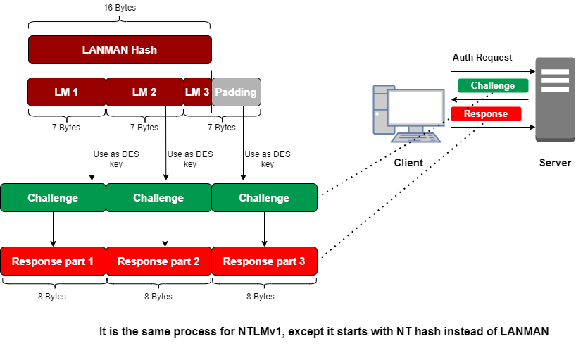

LANMAN Challenge/Response
It's important to note that both the LANMAN
Challenge/Response and the NTLMv1 Challenge/Response use exactly the same padding, splitting, and encrypting steps.
The only difference is that the LANMAN Challenge/Response starts with the LANMAN hash, whereas the NTLMv1
challenge/response starts with the NT hash
1. client indicates to a server (such as a domain controller
or an individual file server) that it wants to authenticate.
2. The server responds with a randomly generated
challenge.
3. The client formulates its response by using the account's LANMAN hash to transform
mathematically the challenge into a response by:
1) Padding LANMAN hash (which is 16 bytes long, not the
original LANMAN password, which is up to 14 characters long) to
21 bytes
2) Splitting
LANMAN padded hash into
three 7-byte
pieces +1 parity byte 3) Using
each
piece as a DES key to
encrypt the challenge , resulting in
Response parts 1, 2, and 3. The
Response parts
are concatenated together and sent to the server.
Bibliography:
•
https://www.sans.org/blog/protecting-privileged-domain-accounts-network-authentication-in-depth/•
https://www.sans.org/blog/protecting-privileged-domain-accounts-lm-hashes-the-good-the-bad-and-the-ugly/
{kind=link}